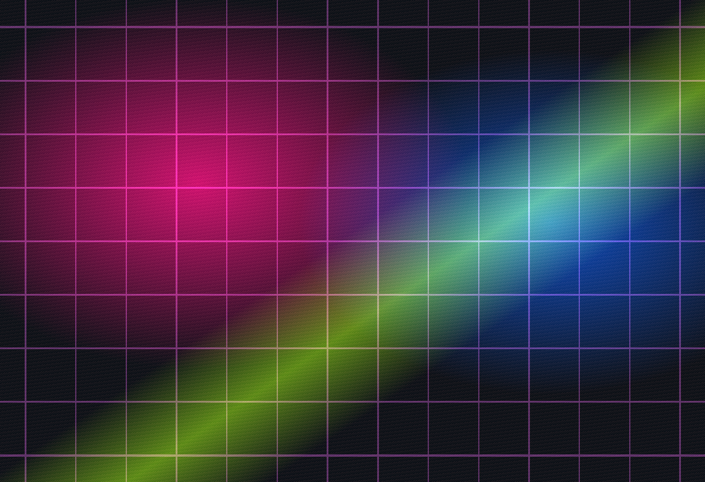

04 / Digital Art
Experimental images, edits, composites, and visual systems.

Digital studies
Collage, texture, manipulation, poster work, and screen-born images.
Use this page for digital artwork, mixed-media experiments, visual identities, cover concepts, motion stills, AI-assisted studies, or any pieces that sit outside a traditional photo or video category.